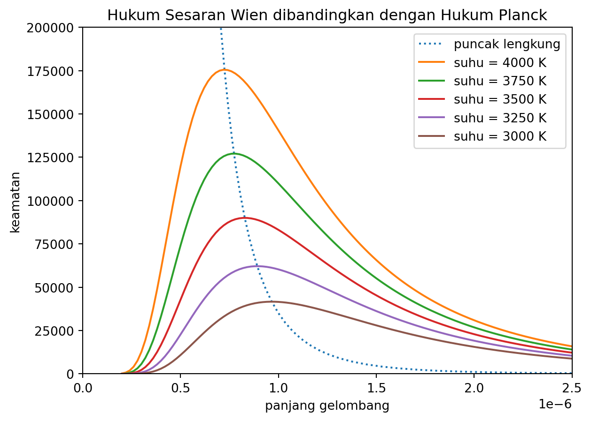

5 Hukum Sesaran Wien
5.1 Kaitannya Dengan Hukum Planck
Proof. Hukum sesaran Wien menerangkan kedudukan puncak lengkung jasad hitam. Puncak lengkung boleh diperoleh daripada pembezaan persamaan Planck. Puncaknya ialah titik yang menghasilkan pembezaan sifar.
Usul
Puncak lengkung boleh diperoleh dengan membezakan pers. Planck terhadap panjang gelombang, \(\lambda\), kemudian menyamakannya dengan sifar, \[ \frac{\text{d}U}{\text{d}\lambda} = \frac{\text{d}}{\text{d}\lambda}\left(\frac{8\pi hc}{\lambda^5}\frac{1}{e^{\frac{hc}{\lambda k_BT}}-1}\right) = 0. \tag{5.1}\]
Petua 5.1 (Pembezaan Hasil Darab) \[ \frac{\text{d}}{\text{d}x}(u\cdot v) = \frac{\text{d}u}{\text{d}x}\cdot v + u\cdot\frac{\text{d}v}{\text{d}x} \]
Persamaan Planck boleh dipecahkan menjadi hasil darab dua fungsi, \[ u = \frac{8\pi hc}{\lambda^5},\; v = \frac{1}{e^{\frac{hc}{\lambda k_BT}}-1}, \tag{5.2}\] lalu petua pembezaan hasil darab (petua 5.1) boleh diguna pakai, \[ \frac{\text{d}U}{\text{d}\lambda} = 8\pi hc\left(\frac{-5}{\lambda^6}\cdot\frac{1}{e^{\frac{hc}{\lambda k_BT}}-1} + \frac{1}{\lambda^5}\cdot\frac{hce^{\frac{hc}{\lambda k_BT}}}{\lambda^2 k_BT\left(e^{\frac{hc}{\lambda k_BT}}-1\right)^2}\right) = 0. \tag{5.3}\]
Dengan memfaktorkan pekali-pekali sepunya, kita akan peroleh, \[ \frac{8\pi hc}{\lambda^6\left(e^{\frac{hc}{\lambda k_BT}}-1\right)} \left(-5+\frac{hce^{\frac{hc}{\lambda k_BT}}}{\lambda k_BT\left(e^{\frac{hc}{\lambda k_BT}}-1\right)}\right) = 0. \tag{5.4}\]
Disebabkan pers. 5.4 bersamaan dengan sifar, maka sebutan-sebutan di luar kurungan tersebut boleh diabaikan. Kini, tumpuan kita berada di dalam kurungan tersebut, \[ -5 + \frac{hce^{\frac{hc}{\lambda k_BT}}}{\lambda k_BT\left(e^{\frac{hc}{\lambda k_BT}}-1\right)} = 0. \tag{5.5}\] Persamaan ini boleh diringkaskan dengan memperkenalkan satu pembolehubah \(X\).
Usul
Kita takrifkan \(X\) sebagai, \[ X = \frac{hc}{\lambda k_BT}. \tag{5.6}\]
Maka, pers. 5.5 kini menjadi, \[ X\frac{e^X}{e^X-1} = 5. \tag{5.7}\]
Pers. 5.7 ini perlu dinilai menggunakan kaedah berangka untuk memperoleh nilai \(X\). Boleh rujuk lampiran A untuk ikuti kiraan yang dilakukan. Nilai X yang diperolehi ialah \(X \approx 4.9651\).
Setelah itu, pers. 5.6 perlu disusun semula dalam sebutan \(\lambda T\). Disebabkan kita sudah takrifkan pembezaannya sifar, maka \(\lambda\) di sini semestinya merujuk kepada panjang gelombang puncak iaitu \(\lambda_p\), \[ \lambda_p T = \frac{hc}{X k_B}, \tag{5.8}\] dan menggunakan nilai \(X\) yang diperoleh sebentar tadi, kita dapati nilai \(\lambda_p T\) ini sememangnya sama dengan pemalar Wien, \[ W = \frac{hc}{X k_B} = 2.8978\times 10^{-3}\text{m}\cdot\text{K}. \tag{5.9}\]